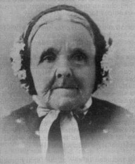
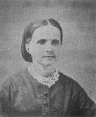

This was the meeting that Barnard had so eagerly awaited for over eleven months. When Barnard left England, he was wearing a broadcloth suit and a silk hat. By the time he met his mother in Boston, he had outgrown his English clothing and was wearing rawhide boots and rough clothes. When his sister Elizabeth saw him, she began to cry, as he looked so raw and uncouth in his American clothes. She cried out, "My poor brother Barnard what have they done to you?"
The passengers on the good ship Horizon were just ordinary English people who little dreamed that the ship's name and its passenger list were to connote tragedy and heroism for Utahns to immortalize forever more.
Elizabeth had this to say about their journey. "We left London on the 22nd of May 1856, arriving In Liverpool that night and on the 24th day of May sailed on the good ship Horizon bound for Boston Harbor under the Presidency of Edward Martin and Jessie Haven. We had a pleasant voyage with the exception of one storm. We had three deaths and three weddings. We had 856 passengers on board, all of the Mormon faith. We had our meetings on Sundays and sometimes through the week, also singing and dancing. Each passenger was allowed so much rations which consisted of hard sailor's biscuits made of coarse flour so hard we could hardly break them, salt pork and beef, rice and split peas. We had a large cook house on deck and cooks. We had so much water allowed each person, but it was very poor. When the sea was calm, we could occupy our time in reading, sewing, and taking our walk on deck. Also we listened to the sailors singing while they were pumping the water out from the bottom of the ship. They never worked without singing, so that they could all pull together. Then it was a grand sight to see the sun go down. We were thankful when the captain told us we would soon see land. We arrived in Boston Harbor June 20, being just five weeks on the sea."
These "thankful" passengers were the ones marked for heroism and tragedy.
Barnard gave some additional information about the company. He stated, "My mother, brother Richard and sisters Elizabeth and Eliza left England the 22nd of May on the ship Horizon commanded by Captain Reed with 856 saints on board under the presidency of Elders Edward Martin, Jessie Haven, and George F. Vaugh. The emigrants were 635 Perpetual Emigration Fund emigrants 221 ordinary, including seven cabin passengers. Among the number were Samuel Purcell and family who had given the first sixpence to the Mormon Elders when they first went to England in 1837." Notice that the boy who admired sea captains remembered Captain Reed's name even though he had not crossed the ocean on his ship.
To continue the journey, Barnard, said, "We took the cars for Iowa City, crossing the Hudson at Albany and passing through Buffalo on the 4th of July. We traveled by train 1500 miles from Boston to Iowa City, which was a very tiresome Journey. We were put in cars that had no seats, and we had to sit on our trunks and baggage with no room to lie down at night. We arrived in Iowa City on the 8th of July 1856.
Can you picture the family? Mary Ann Syer White [she was 63 years old] was always a fastidious little woman. Can you see her in her good, English clothes seated on a trunk, enduring with unwavering stoicism the soot, the intense heat of July, and the bodily weariness of her cramped position. She said that she never knew what it was to be tired until she was an old lady. But this journey must have tried her soul. Then there were Eliza and Edmund Brooks so happy to be united again after separate journeys to America that discomfort may not have worried them too much.
The youngest of the group, Richard, may have found the journey full of excitement -- for were they not going into the Wild West of buffalo herds and wild Indians? A London school boy's anticipation of adventure, no doubt, carried him through the journey on the crest of a wave of excitement.
Charming eighteen year old Elizabeth's enthusiasm could not be dimmed in spite of her discomfort. With curls bouncing and eyes flashing, she tried to enliven the tedious hours with her good humor. She was especially solicitous for the comfort of her dear mother.
Barnard probably looked out of place in this precise English family group. In his heavy rawhide boots, his coarse clothing, and his newly acquired air of being the man of the family with nearly a year's experience in America, he may have been the only one who looked prepared for the unknown trials of the journey ahead of them.
"When we completed our journey to Iowa City, " wrote Elizabeth when she was an old lady in her eighties, "we were informed that we would have to walk four miles to our camping ground. All felt delighted to have the privilege of a pleasant walk. We all started, about 500 of us, with our bedding . We had not gone far before It began to thunder and lighten and the rain poured. The roads became very muddy and slippery. The day was far advanced and it was late in the evening before we arrived at the camp. We all got very wet. The boys got our tent up, so we were fixed for the night, although very wet."
Only a person who has experienced a torrential summer rain in the Midwest can visualize their discomfort. Drenched to the skin, huge daubs of mud clinging to their English boots, slipping as they walked, and a tent to pitch in the darkness of a rainy evening! Wet bedding and no place to lay it down but in more mud! What a contrast it was to their cobble-stone streets and their sedate and comfortable London home! That was their initiation into camping in America. The hours of washing and cleaning to get free of this mud can only be surmised.
That camp at Iowa City must have been a strange one, for instead of wagons being assembled, handcarts were being provided for the people. Already two companies of handcart pioneers had pulled out from Iowa City. Now the seasoned timber for handcarts had been exhausted and green timbers were being used, Hopes were high and the people's faith undaunted, but the persistent delay in getting started must have worried many.
Mary Ann Syer White and her family were not to be numbered among the handcart people. Mary Ann had gold to buy an outfit in which to take her family to Zion. They were to go with the Hunt Wagon Company. Barnard wrote, "My time was occupied for some time after in looking up an outfit. " Four head of oxen and two cows were found and purchased together with a good wagon. The outfit was a good one, adequate provisions were purchased, and they were ready to push westward. But as Barnard stated, "We finally got ready but had orders not to start and lay on the camp ground until September 5 when, we bid adieus to the camp and started on our Journey to Zion.
"On the road to Council Bluffs we were told that we were too late and would perish on the road, but the Elders told us it would be all right and we would get to the valley. Our train numbered about forty wagons led by Captain John A. Hunt."
"The handcart company started ahead of us,"according to Elizabeth. "We started our journey across the plains with two yoke of oxen, two cows, a tent covered wagon, our trunks, bedding and provisions, and seven of us in the family; so we had to walk except when we went through water. I think we would travel from fifteen to twenty miles per day when the weather was fair. We got along very well, had no trouble with the Indians, but when we were near Fort Laramie a herd of buffalos came along as we were traveling and caused our cattle to stampede, resulting in the death of Mrs. Walters. [Esther Walters, wife of John Walters, step-mother of Barnard White's first wife, Elizabeth Ann Walters.] She was driving the team in front of ours and was knocked down and trampled by the oxen. She never spoke but died in a few minutes leaving a young baby. This sad affair cast a gloom over our camp. She was sewed in a blanket and buried by the wayside."
Barnard said, "In a few days we caught up to the Martin Handcart Company and many of them were getting quite worn out. The weather was fair and we got along quite well until we were well up the Platte River. Then the weather turned cold and stormy, and the handcart company was on one half rations. We were about 400 miles from Salt Lake City. The poor souls were giving out every day and laying their bodies down by the wayside."
Their ordeal was just beginning. Elizabeth said, "It was getting cold. We finally reached the last crossing of the Platte River. Our company camped on the east side and the handcart company passed over that night. All our able bodied men turned out to help them carry women and children over the river. Some of our men went through the river seventy-five times. During the night six inches of snow fell. It was a terrible night for them. This was on the 20th of October."
Barnard in telling of that same dreadful night said, "Their suffering was intense that night, and the next morning there were thirteen dead bodies in camp. An old gentleman went out to get some wood, and the wolves caught him and ate and carried off his body. All that remained was his shoes and the feet were in them."
"The snow continued falling for three days, " according to Elizabeth, "and from this time on we had no feed for our cattle and when it stopped snowing and we could see to travel our cattle were so weak they would drop in the yoke. "
Barnard, the sixteen-year-old driver of the cattle said, "Our cattle were droopy for want of food, and from this time on we had to cut down trees for them to brouse upon and still they died off fast, as many as twenty-five per day. "
While the wagon company was struggling to get their lumbering wagons over the trail with these starving animals, the handcart people were dying in large numbers: "In fact, " said Barnard, "they would rather die than live; and so much was this the feeling that a strong guard was kept at the rear to drive them along. They appeared to be like a lot of worn out cattle, lost all modesty and had no feeling for anything except to eat and die, but I cannot find language to express the sufferings of these people, and God forbid that I should ever witness such scenes again. "
Food was running low for the wagon train as well as for the handcart people, as the more ample supplies of the wagon company had been shared with the handcart Saints.
Elizabeth said, "When our cattle were so weak they would drop in the yoke, they would kill them for us to eat, as our provisions were getting very low and we were living on one-fourth pound of flour per day. We used nothing but this poor meat for our noonday meal." Later the ration of flour was reduced to one tablespoon of flour per day. This mixed with snow water was made into a water gruel.
"We were in this condition, " Elizabeth stated, "until we reached Devil's Gate. We could go no farther. Three of our oxen and one cow had died, and the rest of the company were in about the same condition. We had nothing to burn, only the sage brush from under the snow, and melt the snow off the sage for water to make our tea. We made our bread with sage water and soda, what little we had. The snow was then from three to ten inches deep. The ground was frozen so hard they could not drive the tent pins, so they had to raise the tent poles and stretch out the flaps and bank them with snow. "We were almost out of provisions. Our dear mother said she had never seen her dear family want for bread, but said the Lord would provide. About midnight that night all had retired, and we were awakened with a noise and thought it was the yelling of Indians. We got up expecting they were upon us, but to our great surprise the noise was caused by the teamsters of a relief train and some of the camp shouting for joy. They were loaded with all kinds of provisions --flour, bread, butter, meat of all kinds, but all frozen very hard. Everything was so good. The bread was like cake so sweet and nice. I remember we had to cut everything with a hatchet, but, oh, how thankful we all were that the Lord had answered our prayers and saved us from starvation. Through the timely action of Brigham Young in organizing the company, we were saved. The loaded wagon that came to our camp was from Draper. George Clawson and Gurnsey Brown were the teamsters."
Elizabeth and her family, no doubt, were the recipients of some of the food hastily assembled that Sunday afternoon of October Conference when word first arrived telling of the distress of the handcart companies. Women, so we have been told, rushed home and took the bread from their boxes and took it to Emigrant Square where the wagons were being loaded for the relief train. The frontier teamsters almost despaired of reaching any of the emigrants alive when the deep snow and cold weather closed in.
Relief had come and rejoicing was general, but their ordeal was not over. Families were separated as the weaker members were rushed towards Zion. Some of the stronger emigrants were asked to help the teamsters in this task. Elizabeth was among those who were asked to go along and care for the sick. Elizabeth tells of this event in this way: "The next evening when we had made the campfires, the boys had cleared the snow away and several of us young folks were sitting around the fire singing. Our captain, John Hunt, and these two teamsters stood there until we got through singing. Then the captain came to me. He said that Mr. Brown was going to take a load of sick and old folks and if I would go with them, as his wife needed help, he would give me a home. I told him I would rather he would take my mother as I could not leave her, but she begged me to go, as they would soon follow.
"I bade my dear mother goodby thinking she and the folks would soon follow, but they did not come for two long weeks. I was lonesome when I left camp. We overtook the camp ahead of us [Martin's Camp]. We stayed there and got Sister Esther Brown, one of the girls who crossed the sea with us. We had a load of sick and infirm folks under cover, and we had to sit in front with the men folks. We had to walk considerable. When we got to the foot of Big Mountain, the snow was so deep I had to put on men's boots. The teamsters and Esther were tall, and she could step in their tracks, but I could not and had to make my own road up both mountains, frequently falling down as the snow was so deep and drifted, but they told us when we got to the top we could see Salt Lake City. We were so thankful and delighted that it seemed to renew our strength and energy. It was the hardest part of my journey, but the thought of being nearly at our journey's end after six month's traveling and camping was cheering. If only my dear mother had been near, I would have felt much better. When we got to the top of the mountain, the men took off their hats and we waved our handkerchiefs. They pointed out Salt Lake City, and I could not believe it until we got nearly to it. We arrived in Salt Lake City just at sundown on the 30th day of November 1856. Bishop Hunter came to the wagon. 'Well,' he said, 'Brother Brown, I thought you were to bring the sick and old folks.' He said, 'I have. ' 'Well, it does not look it when we look at those girls.' He smiled and found the rest under the cover.
"They took us to Ephriam Hank's home to stay all night. Next morning they took us to Draper in a sleigh, and the snow was almost two feet deep. It was my first sleigh ride, and the longest I ever had. We arrived there all right and were welcomed by Sister Harriet Brown. I can never forget her kindness to me, a stranger in a strange land. My happiness would have been complete if only my dear mother, brothers, and sister had been with me. It was two long weeks before they arrived; then my happiness was complete. "
But what had happened to the rest of the family? Barnard tells of the departure of Elizabeth's group in this way. "The next morning all the weakest of the company were put in wagons, and they were soon on the road and left the camp behind to follow as best they could. At this point our Captain John A. Hunt concluded we must leave some of our wagons. We had only saved one ox and one cow of our team. We were disabled and left our wagon and all our trunks and baggage except bedding and necessary clothing. Brother H. J. Newman had two yoke of cattle left, and we concluded to double up with him and hitch up our cow and ox. So we left our all, as it were, and started out on rations of one fourth pound of flour per day and using such cattle as dropped in the yoke. We would knock them in the head and cut their throats and take the best meat. You may judge what kind it was. We made a kind of soup with it, and stirred our flour in and made a sort of a porridge with it. We traveled about 200 miles in this condition. Our cattle continued giving out until we reached Fort Bridger 115 miles from Salt Lake City. At this point we were forced to camp as our teams were about all dead. The fort was kept by Lewis Robinson. He had some provisions such as flour, corn, and bacon. He sold all he could spare to the emigrants taking in pay jewelry and money, but this soon gave out and was consumed.
"In this condition we remained for about ten days, starvation staring us in the face. I shall never forget the feelings of my mother. She called us together and said that she had never seen her dear children cry for bread before, but said the Lord would open up the way and send us some provisions. About midnight of that day when all the camp had retired, we were awakened by a noise such as the yelling of Indians, and all got up expecting the Indians were upon us, but in this we were mistaken. The noise was caused by the teamsters of the relief train. Their wagons were loaded with flour. I will leave you to judge our feelings. Suffice it to say the flour was rationed out and all the camp was baking bread. Thus we were delivered from starvation and death by the timely action of Brigham Young in organizing this company and starting them off to save us.
"The next morning we started for Salt Lake City. It took us ten days to go 115 miles passing through heavy snows. At night we would clear away the snow and pile some logs up and set them on fire. They would burn all night and helped to keep us from freezing. Our journey over Big Mountain can never be forgotten. The snow had drifted 20 feet deep, and we had to cut channels as much as ten feet deep. I had no shoes or boots on; my feet were in rags. On the morning of the 13th of December 1856 we passed through Emigration Canyon, and as we emerged there from we beheld with joy Salt Lake City about five miles in the distance. At first it was hard to tell whether there was a town or the sage brush covered with snow.
"About four p.m. we arrived at the Tithing Yard. There were large crowds of brethren and sisters to meet us, but it was hard work for them to select their friends and relatives. They wept like children to see our pale, emaciated, and care-worn bodies, for we were quite worn out and had but very little strength left. In a short time we were put under the care of the bishops of the various wards and were plentifully supplied with the good things of the earth. Our family was in the care of Bishop Wooley of the 13th Ward, who treated us very kindly and kept us supplied for several days. Then Bishop Isaac M. Stewart from Draper, Salt Lake County, called on us, and we were informed that sister Elizabeth was taken to that place, and he wished us to go also. By this time my brother Richard was working for William S. Godby, a druggist, who had agreed to teach him the business. After consulting together, mother and I concluded to go with Bishop Stewart as he had promised me work and a place for mother. We arrived in Draper at dusk and were taken to Gurnsey Brown's. A few days after mother hired out to a Mrs. Burnham and I to Mr. Brown. In about three months we went to keeping house."
Barnard in his vivid account of their journey hardly mentions his own suffering. The fact that he was without shoes, with his feet wrapped in rags, was due in part to his cutting off strips of his boots so that in chewing the rawhide the pangs of hunger might be assuaged, for who can be hungrier than a sixteen-year-old trying to do the work of a man.
Neither Barnard nor his mother had ever had to take charity before. They were proud English people. Barnard in later years often recalled the humiliation of having to walk down the streets of Salt Lake City in his rags and almost at the end of his endurance while the curious stared at him. He knew they were his brethren and that they were eager to help him, and yet for Barnard and his family that day brought them to the depths of their humiliation.
Eliza White and her husband Edmund Brooks went to Cottonwood where his sister was living. So by Christmas of the year 1856 all the family were settled in pioneer homes.
They were extremely fortunate to arrive in Zion in safety, as many had perished on the way and many had permanent injuries because of frozen feet and hands. Eliza died in childbirth the following December. Whether her death had any connection with her suffering on the plains, we do not know. Of the rest of the family, none of them had suffered any lasting discomfort, but the memory of their perilous journey over-shadowed their lives for years to come.

Mary Ann Syer White . . . . . . .Elizabeth White